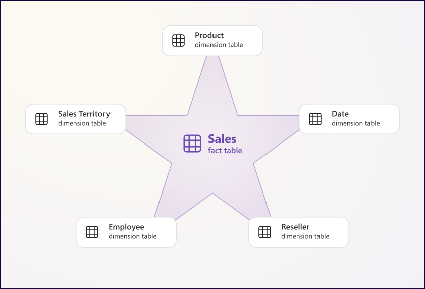

Power BI star schema project - Artificial webshop data
Power BI star schema project using artificial webshop data.

Power BI star schema project using artificial webshop data.

Mastery of SQL queries for data analysis using Jupyter lab, jupysql and sqlite3.
Cleaning world layoff data using MySQL.
Analyzing world layoff data using MySQL.
Analyzing the survey answers of data professionals using Power BI.
Analyzing data from 2016 airbnb listings using Tableau.
Analysing bike sales data using Excel.
Cleaning customer call list data using pandas.
Analyzing patterns in world population data using pandas.